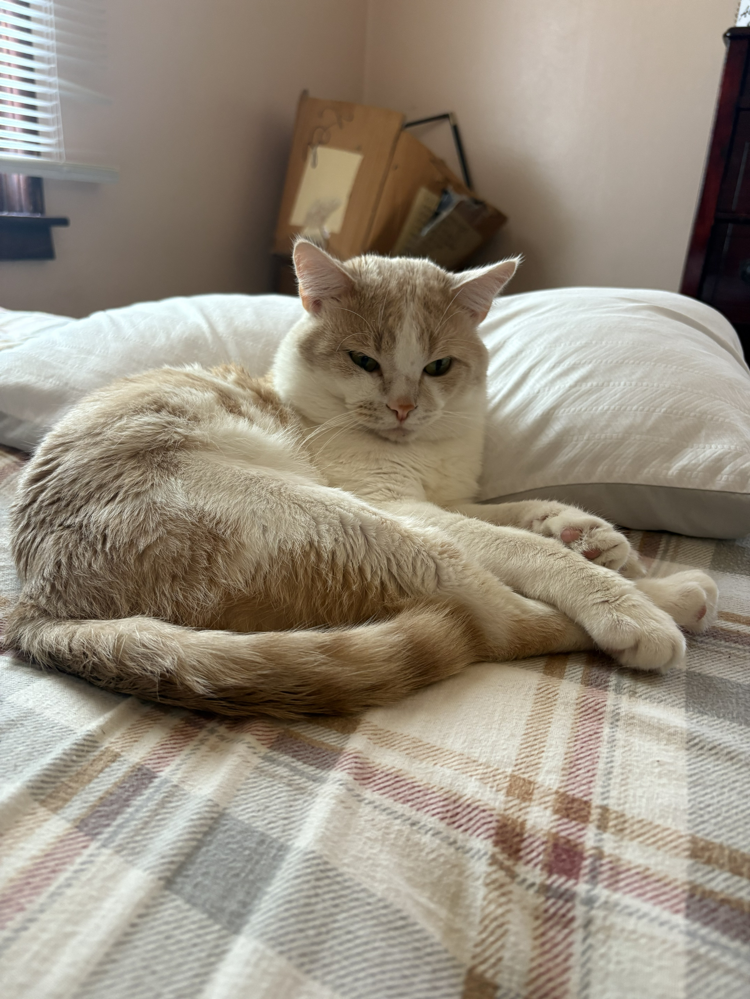

About George

George is not just a cat. He is an experience.
Who Is George?
George is a 4‑year‑old domestic short‑hair with a passion for sleeping, eating, and begging for attention. He has been described as “mysterious,” “soft,” and “stinky like no other cat(per my fiance).”
When he’s not busy being rented out as a temporary emotional support companion, George enjoys staring at walls, sprinting at 3 AM, and pretending he didn’t hear you shake the treat bag.
George’s Qualifications
- ✔ 7+ years of professional napping experience
- ✔ Certified Box‑Sitter (CBS)
- ✔ Expert yapper
- ✔ Tail‑Flick Communication Specialist
- ✔ Has never paid rent
Likes & Dislikes
Likes
- Sunbeams
- Laser pointers
- Being admired from a respectful distance
- Chicken‑flavored treats
Dislikes
- Vacuum cleaners
- Closed doors
- Being told “no”
- Going to work
Ready to spend time with George?
View Rental Packages